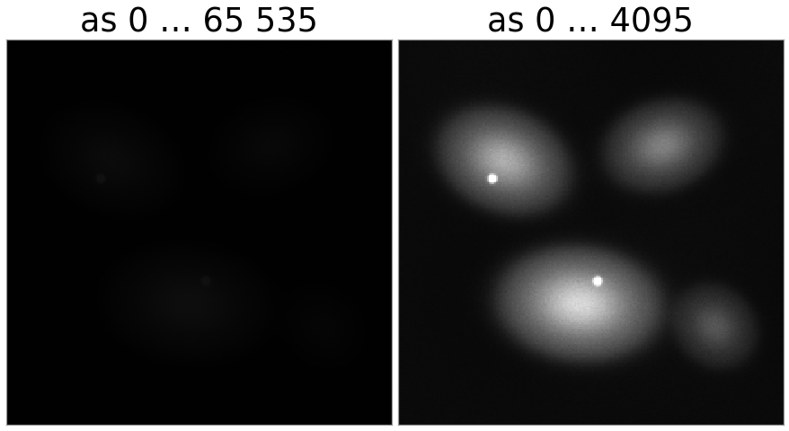
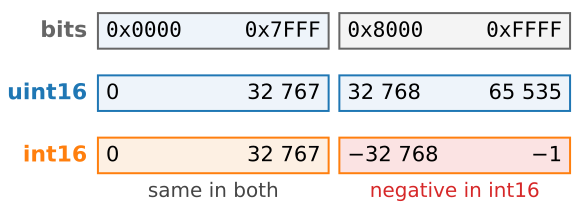
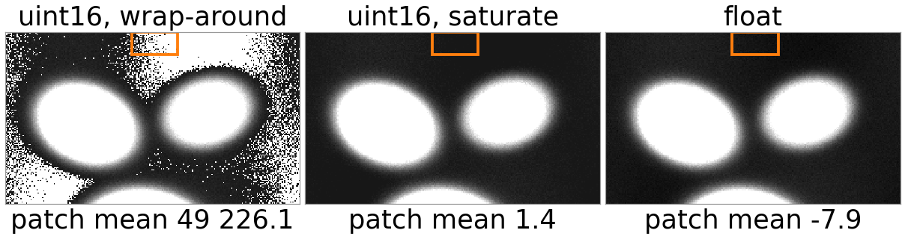
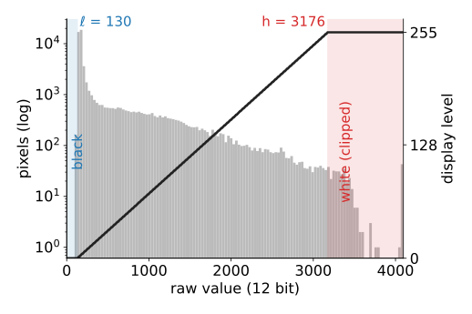
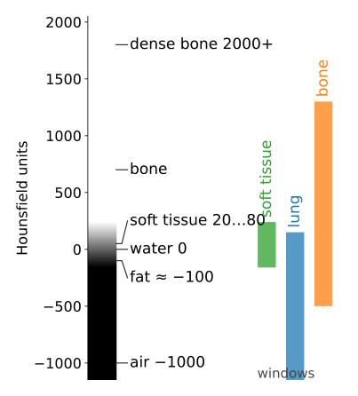
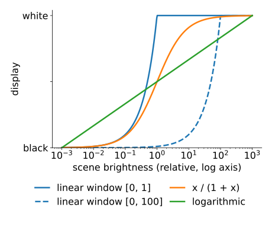

Slides titled The math give the formulas and proofs; the ideas are complete without them.
| source | typical bits | stored as |
|---|---|---|
| scientific camera (microscopy, astronomy) | 12, 14 or 16 | 16-bit unsigned |
| CT scanner | 12 (Hounsfield units, −1024 … 3071) | 16-bit signed, or unsigned with an offset |
| digital X-ray, mammography | 12–16 | 16-bit unsigned |
| raw photo from a camera | 12–14 | 16-bit, or packed |
| your screen | 8 per colour channel (some 10) |
A memory container comes in 8, 16 or 32 bits. A 12-bit value sits in a 16-bit box with 4 bits to spare.
A 12-bit camera writes values 0…4095 into a 16-bit file. A viewer that assumes the full 16-bit range maps 0 → black and 65 535 → white:
4095 \;\mapsto\; 255 \cdot \tfrac{4095}{65\,535} \approx 16 \text{ of } 255.
The brightest pixel is shown as a dark grey: the image looks black, but nothing is wrong with the data. Only the display range is wrong.

| type | bits | range |
|---|---|---|
| unsigned 8-bit (uint8) | 8 | 0 … 255 |
| signed 8-bit (int8) | 8 | −128 … 127 |
| unsigned 16-bit (uint16) | 16 | 0 … 65 535 |
| signed 16-bit (int16) | 16 | −32 768 … 32 767 |
| signed 32-bit (int32) | 32 | about ±2.1 × 10⁹ |

Subtract a background of 160 from a pixel of 150, in uint16:
| arithmetic | result | what you see |
|---|---|---|
| wrap-around (what plain integer arithmetic does) | 65 526 | the darkest pixels become the brightest |
| saturation (clip to the range) | 0 | negatives become 0: the noise is cut on one side, the mean is biased up |
| float (or a wider signed type) | −10 | correct; decide later what to do with negatives |
Same trap when averaging: in uint16, (40\,000 + 30\,000)/2 gives 2232 instead of 35 000, because the sum wraps before the division.

An n-bit unsigned integer stores every result modulo 2^n:
a \ominus b = (a - b) \bmod 2^n, \qquad 150 \ominus 160 = -10 + 65\,536 = 65\,526.
Two’s complement uses the same rule to store negatives: -x is stored as 2^n - x. That is why addition and subtraction circuits do not care whether a number is signed: only the interpretation of the top half of the range differs (2^{n-1} \dots 2^n - 1 means -2^{n-1} \dots -1).
Saturation is \min(\max(a - b, 0), 2^n - 1): not modular, and not linear either; \mathbb E[\max(X, 0)] > \mathbb E[X] when X has noise around 0.
A window [\ell, h] maps raw values linearly to the 256 display levels and clips the rest:
The window changes only the display. Measure on the raw values.

The display level of a raw value v is the straight line through (\ell, 0) and (h, 255), clipped and rounded:
d(v) = \operatorname{round}\!\left(255 \cdot \operatorname{clip}\!\left(\frac{v - \ell}{h - \ell},\; 0,\; 1\right)\right).
With width W = h - \ell, one display level covers W/256 raw values: for W = 4096, 16 raw values share one grey on screen. A LUT (look-up table) generalises this: any function from raw value to colour, stored as a table. The window is the linear LUT.
CT measures X-ray attenuation \mu and reports it relative to water, in Hounsfield units (HU): air −1000, fat ≈ −100, water 0, soft tissue 20–80, bone several hundred to 2000+.
Soft tissue differs by tens of HU, but the image spans 4000 HU: no single window shows everything. Radiologists switch between standard windows:
| window | W | L | range shown |
|---|---|---|---|
| soft tissue | 400 | 40 | −160 … 240 |
| lung | 1500 | −600 | −1350 … 150 |
| bone | 1800 | 400 | −500 … 1300 |
Files often store HU + 1024 as unsigned numbers, with the offset in the header; forget it and every window is 1024 HU off.

\text{HU} = 1000 \cdot \frac{\mu - \mu_\text{water}}{\mu_\text{water} - \mu_\text{air}}.
Water is 0 and air is −1000 by construction; one HU is 0.1 % of the attenuation of water. A stored value s becomes HU through a linear rescale, \text{HU} = a\,s + c (often a = 1, c = -1024), recorded in the file header.
